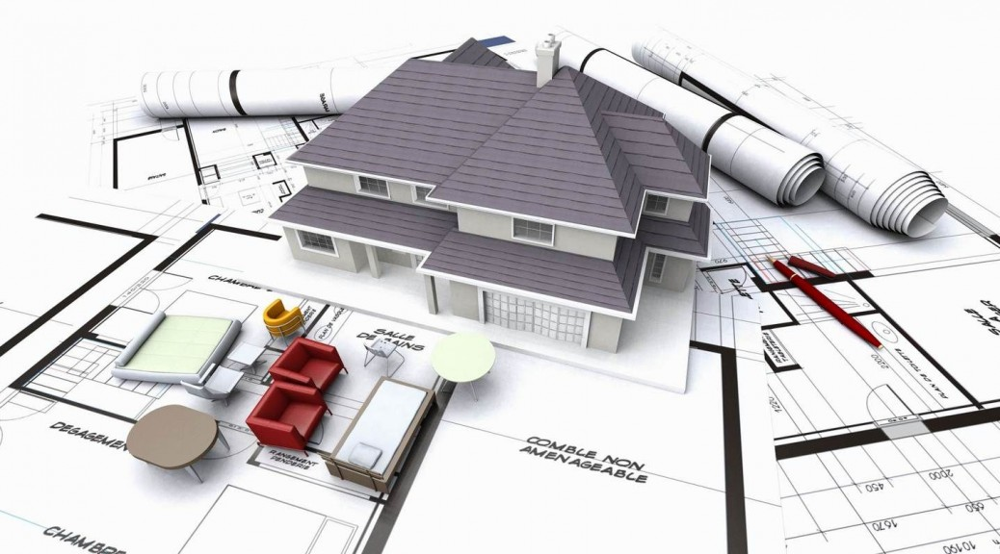
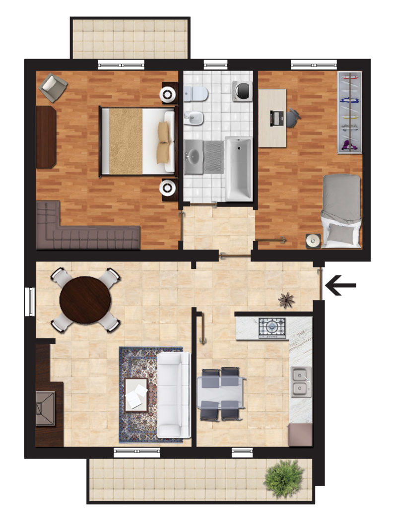
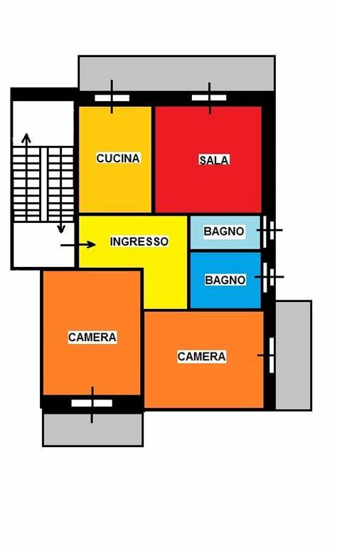

Le planimetrie edili

Planimetria
/pla·ni·me·trì·a/
sostantivo femminile
1.In topografia, lo studio dei metodi e degli strumenti idonei a rilevare punti di una superficie topografica terrestre, determinando la loro proiezione sul piano di riferimento prescelto.
2.Nel disegno tecnico, pianta.

